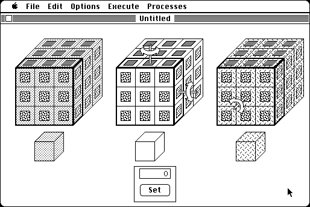

Download
Rubik.zip (61K) Tess 2.0 repackaged into a zipped hfs disk image and checksum file. The disk image can be mounted with Mini vMac.
Rubik.sea.hqx (115K) Tess 2.0 in the original format.
copyright: Dan Velleman
mod date: Jan 6, 1998
license: free for non-commercial use
official url :
Daniel J. Velleman
"Simulates a four-dimensional version of Rubik's cube". Also includes Cube, which simulates the standard 3 dimensional version.

If you find these downloads useful, please consider helping the Gryphel Project, which hosts them.
Here are the md5 checksums for the downloads, signed with Gryphel Key 5:
--------- GRY SIGNED TEXT --------- 1a87ec6a80bbb7bc556be9fc61b84db3 Rubik.zip 5346cdb87e5820fc19e9027a30fe4610 Rubik.sea.hqx ------- BEGIN GRY SIGNATURE ------- Gry/4Xa8CFcUzxdN/GwbT8frGWvP85Oexrdm0E+fFUrWfGFpbZX5Qpp3sfa7IoKE QjY4XDh3sk2gPvr945R0yaI53Dao5U6L5TPHFcCFIt/GIWSA+8JmPOkN/tNApak9 Dq5e+W2uY/9Fz3Yq0GJJVrWtDJ5qMf64fIWW5ckM70W3WCQt4dNH/3qq3aR3vdea -------- END GRY SIGNATURE --------